Welcome to the world of Ubuntu Core! In this codelab, we are going to introduce you how to flash your eMMC for your Intel Joule board, and finally turn your Intel Joule into a Ubuntu Core 16 system.
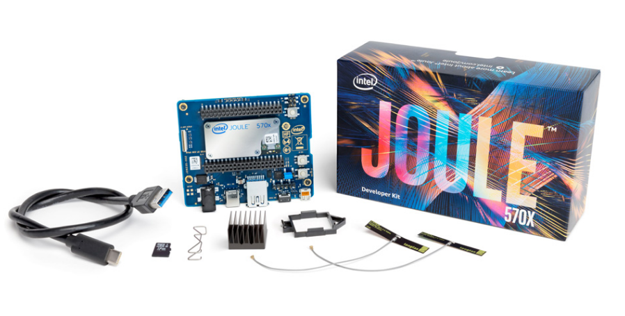
If you have already had an SSO account, you can skip this step and move to the next. The account is used for console-conf in the following steps.
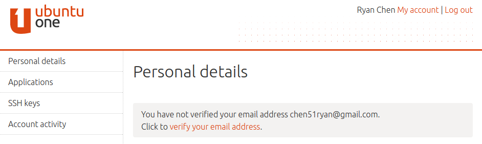
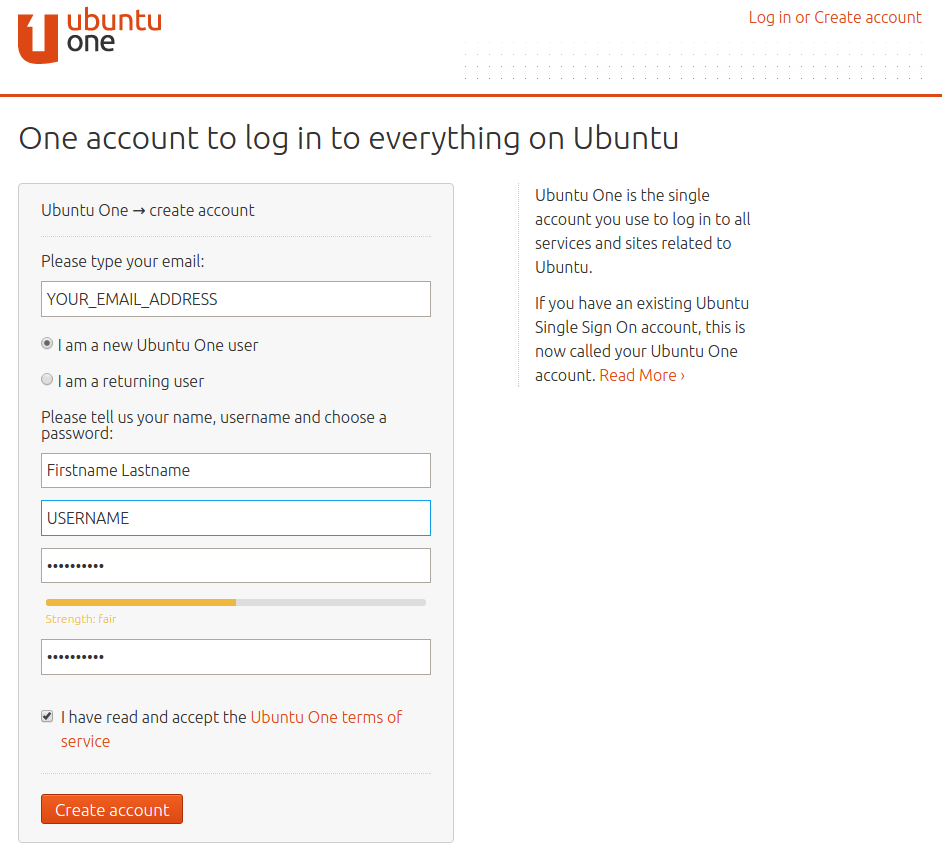
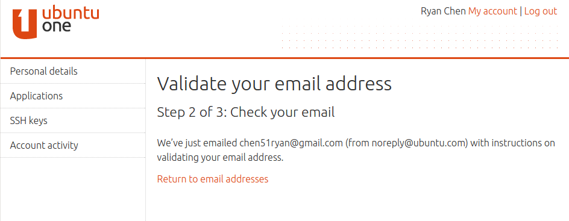
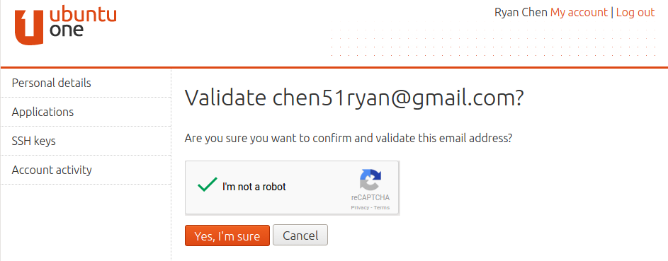
This step is only necessary if you don't have a SSH key on your system.
$ mkdir ~/.ssh $ chmod 700 ~/.ssh $ ssh-keygen -t rsa
You will be prompted for a location to save the keys, and a passphrase for the keys. This passphrase will protect your private key while it's stored on the hard drive:
Generating public/private rsa key pair. Enter file in which to save the key (/home/b/.ssh/id_rsa): Enter passphrase (empty for no passphrase): Enter same passphrase again: Your identification has been saved in /home/b/.ssh/id_rsa. Your public key has been saved in /home/b/.ssh/id_rsa.pub.
Your public key is now available as .ssh/id_rsa.pub in your home folder.
Clicking "SSH keys" on the left side shows the following screen. You can now just copy and paste the content of id_rsa.pub file into the field. Confirm your ssh key by clicking on "Import SSH key".
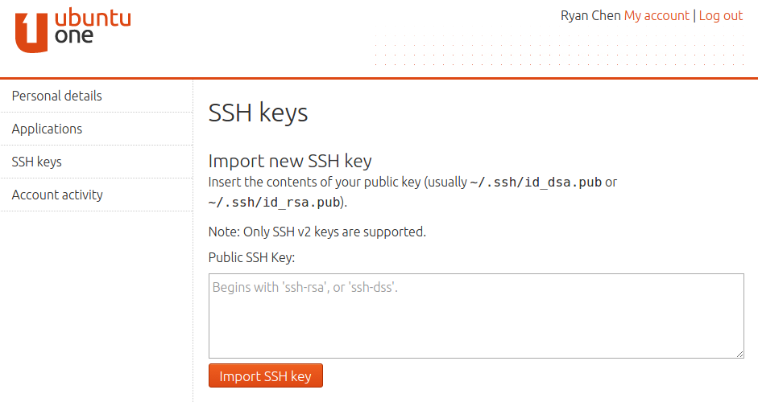
In this step, you are going to flash a bootable image into a Ubuntu Core 16 SD card.
/dev/mmcblk0p1 format, then your drive address is: /dev/mmcblk0. If it is in the /dev/sdb1 format, then the address is /dev/sdb. You may also use the following command to find out your device's name:
$ lsblk
$ xzcat <image_path>/<image_file.xz> | sudo dd of=<drive address> bs=32M
$ sudo dd if=<image_path>/<image_file> of=<drive address> bs=32M
$ sync
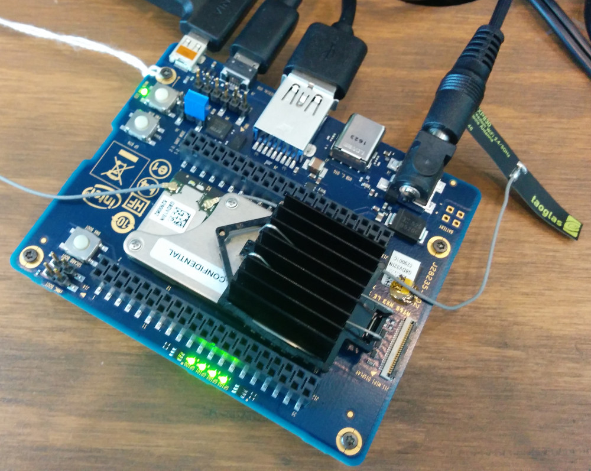
Power on the Joule board for booting on your new image:
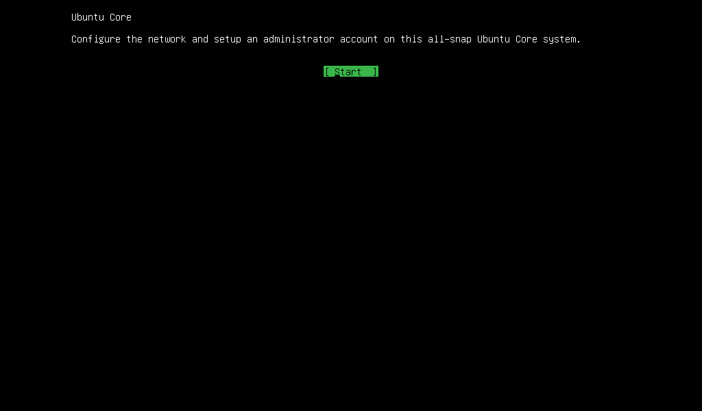
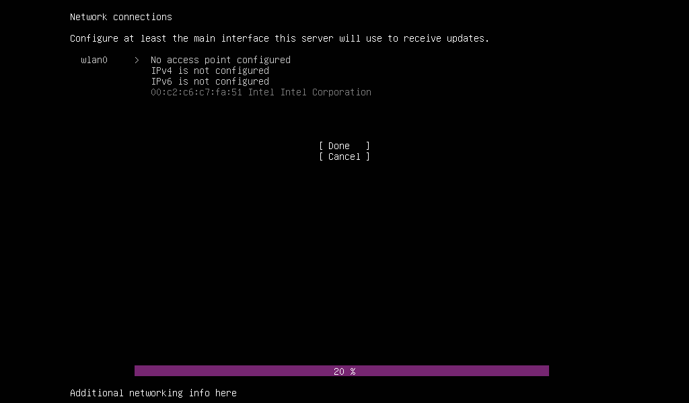
Select ‘Configure WIFI settings' and press enter to get to screen that allows for choosing a visible network, scan for networks or manually enter SSID and Password.
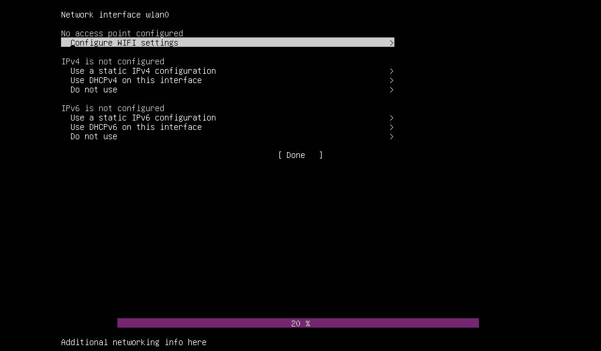
Input your network SSID and password and select ‘Done'. Or use ‘Choose a visible network' to pick a name from the network list. ‘Scan for networks' is used to trigger a new WiFi scan.
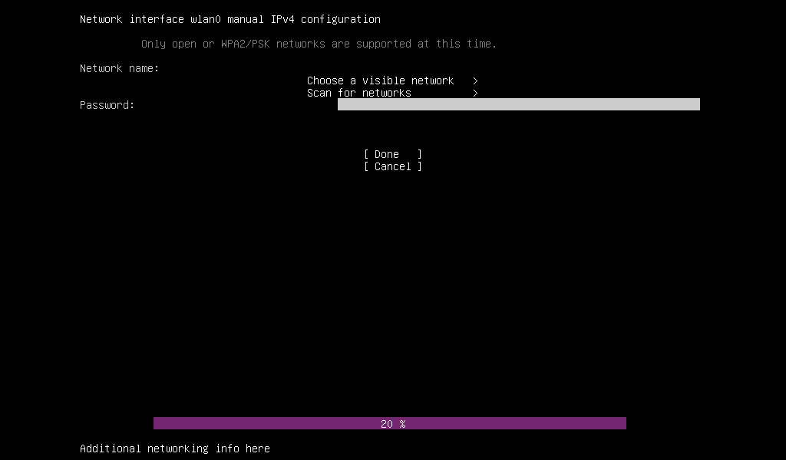
Edit IPv4 and IPv6 configurations if necessary and select ‘Done'.
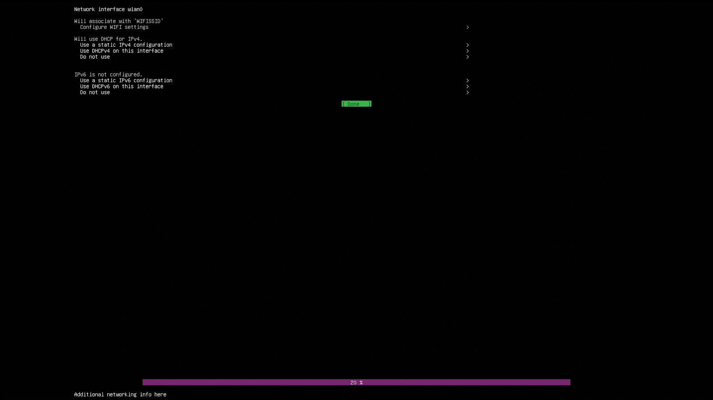
The network settings will be applied.
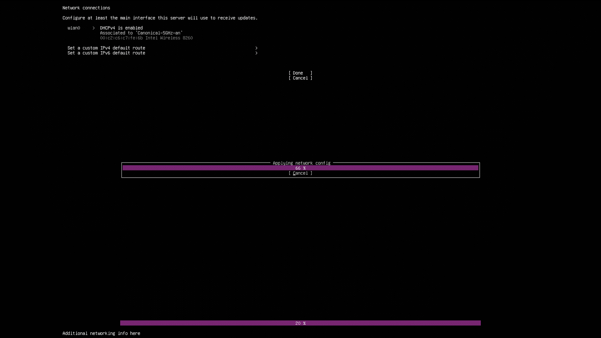
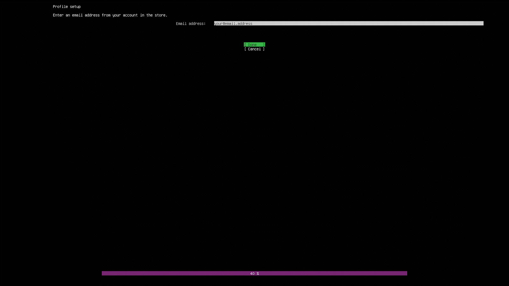
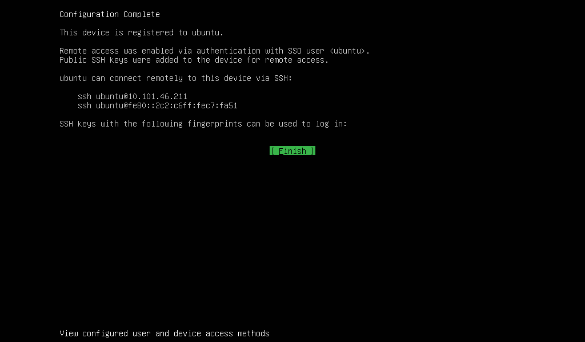
NOTE: only remote access via ssh is enabled until a password is set via instructions in the next step.
Use the command to login Joule via ssh:
$ ssh <username of Ubuntu One>@10.101.46.211
where "10.101.46.211" is the IP address of your Ubuntu Core Joule device. It is shown at the top-left corner of your HDMI monitor after booting.
Your device is now ready to be used. Enjoy! You can now play with snap commands and check that your image contains all desired snaps with ‘ snap list' .
Congratulations! You made it!
By now you should have successfully flashed and configured your Intel Joule board. You now are running latest Ubuntu Core system. You did configure a personal account to connect to it, and prevented the need for a default user account like "ubuntu" due to security concerns.